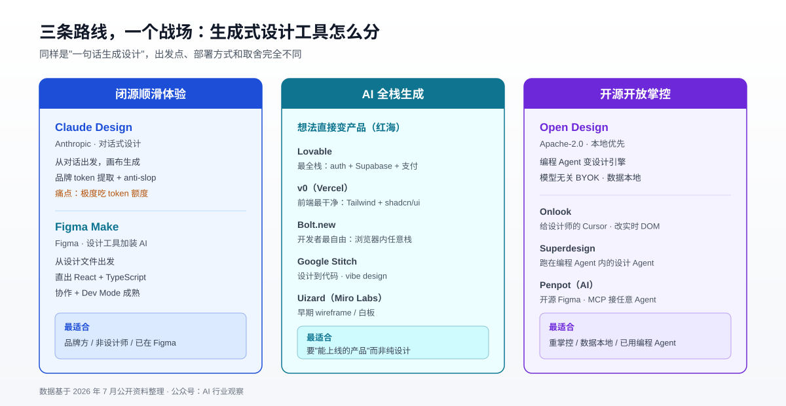

AI 也能当设计师了：Claude Design、Figma Make、Open Design 领衔的生成式设计工具全景（2026）
2026 年 4 月 17 日，Anthropic 上线了 Anthropic Labs 的第一款产品 Claude Design——一个由 Claude Opus 4.7 视觉模型驱动的设计工具。发布不到三个月，开源社区就甩出了对标项目 Open Design，GitHub 上迅速攒到三万多颗 Star。与此同时，Figma 把它的 AI 生成能力 Figma Make 从实验功能推成了正式产品，v0、Lovable、Bolt 三家 AI 建站工具的年化营收合计早已越过数亿美元大关。
一个信号已经很清楚：设计工具的战场，正在从「人怎么把想法画出来」转向「AI 怎么替你把想法生成出来」。
这和我们之前那篇《告别按 License 付费：开源/免费设计工具深度横评》讲的完全是两个物种。那篇聊的是 Penpot、Lunacy 这类传统设计工具——你亲手拖矢量、摆组件、画布局，AI 只是旁边的辅助。这篇要聊的是一批 prompt-to-design 的新物种：你用自然语言描述，AI 直接产出原型、界面，甚至可以运行的代码。
本文先把三个主角 Claude Design、Figma Make、Open Design 摆开对决，再把闭源和开源两条延伸线上的其他重要玩家一次讲清楚。
一、先分清楚：这三个工具根本不是一路人
很多横评把 Claude Design、Figma Make、Open Design 放一起打分，但它们其实是从三个完全不同的方向切进同一个战场的，DNA 天差地别。理解这一点，比记住谁多几个功能重要得多。
- Claude Design 是"AI 工作台向设计延伸"：Anthropic 本来做的是对话式 AI，Claude Design 就是把这套对话能力接上了一块画布。你在左边聊天，右边的画布长出设计。
- Figma Make 是"老牌设计工具加装 AI"：Figma 本来就是设计师的主场，Make 是在这套成熟的设计+协作体系上，补了一个"用自然语言生成 UI 和代码"的新入口。
- Open Design 是"把你已有的编程 Agent 变成设计引擎"：它不自带模型，而是扫描你机器上装好的 Claude Code、Codex、Cursor、Gemini CLI 等 Agent，把它们变成本地跑的设计生产力。
一句话记忆：Claude Design 从对话来，Figma Make 从设计文件来，Open Design 从你已有的编程 Agent来。
二、三大主角逐个拆解
2.1 Claude Design：对话式设计的开山之作
Claude Design 于 2026 年 4 月 17 日发布，是 Anthropic Labs 孵化的第一款实验产品，由前一天刚发布的 Claude Opus 4.7 视觉模型驱动，面向 Pro、Max、Team、Enterprise 订阅用户开放研究预览。
它的界面简单到极致：左边是聊天窗口，右边是画布。你用大白话描述需求，Claude 就在画布上生成一版可用的设计，然后你继续对话迭代。产出覆盖交互原型、pitch deck、one-pager、UI mockup、营销物料等。
真正让它区别于普通"AI 生成图"的地方，是它以设计系统的方式思考，而不是套模板。你可以上传 logo、字体、PDF、SVG，甚至一整个 GitHub 仓库，它会从中提取品牌 tokens（颜色、字号、间距、组件），然后保证之后生成的每一屏都保持一致的品牌风格。社区津津乐道的 "anti-slop mode"（反劣质模式）就是用来压制那种一眼假的通用 AI 审美的。
导出路径也很实用：可以导到 Canva、PPTX、PDF、可分享 URL、独立 HTML，或者直接交给 Claude Code 当作待实现的交接稿。
但它有个绕不开的痛点：极度吃 token 额度。 社区里最集中的吐槽就是"设计确实好看，但几下操作就把订阅额度啃掉一大块"。
Anthropic 在 2026 年 6 月 17 日推出了被社区称为 Claude Design 2.0 的重大更新，直接冲着这些问题去：
- 支持从代码库直接导入设计系统
- 与 Claude Code 打通双向
/design-sync往返 - 支持在画布上直接编辑
- 给管理员加了品牌锁定控制
- 各档订阅的周额度翻倍，重构了 token 消耗模型
这次更新把 Claude Design 从一个"惊艳的生成器"推向了"能进企业工作流的正经产品"。
2.2 Figma Make：设计师老巢里长出的 AI 入口
Figma Make 是 Figma 内置的 "prompt-to-app" 能力：你用自然语言描述想建什么，它自动生成 UI、交互和底层代码。它最大的底气在于背靠 Figma 这套已经被全球设计师用了十年的设计+协作体系。
几个关键事实：
- 生成的是干净的 React + TypeScript 代码，而且免费档也能拿到完整源码，这让产出更像一个真实起点，而不是用完即弃的原型
- 可以从已有的 Figma 设计文件出发，把设计上下文喂给生成过程
- 新增了 properties panel 和 annotations，可以选中任意元素直接在属性面板改，或写就地 prompt
- 甚至能连上代码库，把改动一路推到 PR
定价上，免费 Starter 每天 150 个 AI credits、每月 500 个；Professional $16/月/人（含 3000 credits/月）；Organization $55/月；Enterprise $90/月。要解锁 Make 的完整能力（发布、私密分享）需要 Full seat。
一句话：如果你的工作本来就从 Figma 设计文件出发、团队已经在 Figma 里协作，Figma Make 是阻力最小的那条路。它强在精确度、协作成熟度和"设计-代码"的连续性。
2.3 Open Design：开源社区的"掀桌"回应
Open Design（GitHub 仓库 nexu-io/open-design）是对着 Claude Design 直接做的开源替代品，采用 Apache-2.0 协议，社区已攒到约 3.4 万 Star。它的口号很直白：同样的设计循环、同样的"作品优先"思维，但零锁定。
它和 Claude Design 最本质的差异是本地优先（local-first）：
- 它是一个本地桌面 app，会扫描你系统 PATH 里已装好的 AI Agent（Claude Code、Codex、Cursor、Gemini CLI、OpenCode、Qwen 等 20 多个 CLI），让你按项目切换
- BYOK（自带 API key）、模型无关——你烧的是自己的 API 额度，不受某一家订阅绑定
- 官网宣称支持 21 个编程 Agent、151 个设计系统
- 产出原型、落地页、dashboard、slides、图片、视频，导出真实文件 HTML/PDF/PPTX/MP4
它恰好戳中了 Claude Design 的软肋：闭源工具锁在 web app 里，碰不到你的本地文件、接不进你现有的设计系统、也没法在你真正干活的编辑器里用。Open Design 把这些都反过来做了——文件在本地、Agent 是你已有的、数据不出机器。
代价当然也存在：它没有 Claude Design 那种开箱即用的顺滑体验，要自己配 Agent 和 key，更适合本来就在用编程 Agent 的开发者，而不是纯设计师或非技术用户。
2.4 三方速览对照
下面这张图把三条路线的出发点、部署方式和取舍摆在一起，方便你快速定位自己该看哪一个。

| 维度 | Claude Design | Figma Make | Open Design |
|---|---|---|---|
| 出品方 | Anthropic | Figma | 开源社区（nexu-io） |
| 本质 | 对话式设计 | 设计工具加装 AI | 编程 Agent 变设计引擎 |
| 部署 | 云端 Web | 云端 | 本地优先桌面 |
| 授权 | 闭源订阅 | 闭源订阅 | Apache-2.0 |
| 模型 | 锁定 Claude | Figma 自有 | 模型无关 BYOK |
| 出代码 | 交给 Claude Code | React + TS 直出 | 导出真实文件 |
| 主要痛点 | 吃 token | 需 Figma 生态 | 需自己配 Agent |
| 最适合 | 品牌方/非设计师 | 设计师团队 | 开发者/重掌控 |
三、闭源延伸线：prompt-to-UI/app 这条路已经很挤
Claude Design 和 Figma Make 不是孤军。围绕"一句话生成界面/应用"，闭源阵营已经杀成红海，每家切的点还不太一样。
v0（Vercel）：UI 组件生成里最"生产就绪"的一个，输出 Tailwind CSS + shadcn/ui 代码，直接落进 Next.js/Vercel 管线就能上线。但它基本只做前端，止步于 UI 层。定价分免费、Premium $20/月、Team $30/人/月、Business $100/人/月几档。
Lovable：最全栈的一个。默认就帮你接好 auth、Supabase 数据库，2026 年 4 月起还把 Stripe/Paddle 支付做成一等公民——一个非技术创始人可以一个周末从想法做到收费产品。它的商业化也最猛，年化营收已达数亿美元级别，$25/月还能多人共享。
Bolt.new：最"开发者原生"的一个。基于浏览器内的 WebContainers，能跑任意 JS 技术栈、装 npm 包、手改每一个文件，零本地环境配置。
Google Stitch：设计到代码方向，2026 年 3 月更新加了语音和无限画布，推动了"vibe design"这个说法流行起来；不过它仍偏向从白纸生成较通用的 HTML/CSS。
Uizard（现属 Miro Labs）：自然语言生成多屏 wireframe/mockup，适合早期概念对齐；但用的是 credit 系统、没有原生 Figma 导出，更像"给利益相关者看的白板"，不适合当生产管线。
此外还有 Replit（全栈应用生成）、Framer（设计即发布站点）、Canva Code / Canva AI 2.0（非设计师模板化出图）等，各自守着一块。值得注意的是，这些"AI 生成代码"的工具和真正意义上的编程 Agent 边界越来越模糊，关于它们省下的成本背后藏着什么，可以参考《Vibe Coding 的隐藏代价与安全风险》和《闭源 AI 编程工具横评》。
四、开源延伸线：Open Design 不是唯一的选择
开源这边同样不止 Open Design 一家，而且各有各的路数。
Onlook（onlook-dev/onlook）：定位"给设计师的 Cursor"，GitHub 约 2.49 万 Star，曾登上 Hacker News 第一、GitHub trending 第一（当时热度盖过 DeepSeek）。它的特点是在浏览器里直接可视化编辑 React + Tailwind 应用的实时 DOM，改完直接回写代码——把"设计"和"改代码"合并成同一个动作。
Penpot：开源版 Figma 的旗舰，2026 年活跃用户破 50 万，被视为唯一严肃的开源 Figma 替代。严格说它属于上一篇讲的传统设计工具范畴，但它 2026 年在 AI 上很激进——推出了 MCP Server 和 Agentic 开发环境，让任意支持 MCP 的 AI Agent 都能读写它的设计文件。想深入了解它的选型价值，直接看《开源/免费设计工具深度横评》那篇，这里不展开。
Superdesign（superdesigndev/superdesign）：一个 AI 产品设计 Agent，可以跑在你的编程 Agent 里，在无限画布上从 prompt 生成 UI mockup、组件和完整设计，现在也做成了 Web app。
DESIGN.md 生态（getdesign.md、awesome-claude-design 等）：这是个很轻但很聪明的思路——把整套设计系统写成一份 Markdown 文件，喂给任意编程 Agent，就能生成风格一致的 UI。因为 Markdown 是 LLM 最擅长读的格式，不需要任何解析或特殊工具。Open Design 和 Claude Design 都能吃这类文件。
开源阵营的共同逻辑很一致：不锁定、数据可控、白嫖你自己的 Agent 和 API 额度。它接的是那批本来就在重度使用编程 Agent、对数据主权敏感、又不想被订阅绑架的技术团队——这和企业级 AI Agent 工作流部署的诉求高度重合。
五、到底怎么选？按场景对号入座
工具没有绝对高下，只有合不合适。下面按典型场景给建议。
你是品牌方 / 非设计师，想快速出一致的物料：选 Claude Design。它的品牌 token 提取 + anti-slop + 一句话生成，最适合"没有设计背景但要产出专业物料"的人。只是要盯着 token 额度用。
你是设计师团队，已经泡在 Figma 里，还要连开发管线：选 Figma Make。设计上下文、组件库、Dev Mode 都还是你熟悉的那套，Make 只是加了一个 AI 生成入口，迁移成本几乎为零。
你追求无锁定 / 数据留本地 / 成本可控，且本来就在用编程 Agent：选 Open Design（或 Onlook）。用你已有的 Agent、烧自己的 key、文件不出机器。
你要的是"想法直接变成能上线的产品"：看 Lovable（全栈带数据库和支付）、v0（前端最干净）、Bolt（开发者最自由）这一组，而不是纯设计工具。
你要的是传统意义上的 UI 设计/协作平台，只是想省钱或要自托管：那你其实应该回到上一篇——Penpot、Lunacy 那批传统开源工具才是答案，而不是本文这批生成式工具。
六、一个更大的判断：品类正在合流
如果把视角拉高一点，会发现一件更有意思的事："设计工具"和"编程 Agent"的边界正在快速消失。
- Claude Design 的产出可以直接交给 Claude Code 实现，Figma Make 直接生成 React 并推到 PR，Open Design 干脆就是拿编程 Agent 当引擎
- 反过来，编程 Agent 也在长出设计能力——DESIGN.md 生态就是让任意 coding agent 都能"懂设计"
- 谁的接口更开放（能接 MCP、能吃 DESIGN.md、能 BYOK），谁就更容易在这场合流里吸引到生态
这意味着未来的分野可能不再是"设计工具 vs 编程工具"，而是"闭源顺滑体验 vs 开源开放掌控"这两种哲学之争。Claude Design 和 Figma Make 代表前者：体验打磨到位，但你在别人的花园里；Open Design、Onlook、Penpot 代表后者：要自己动手，但地是自己的。关于这两条协议路线怎么互通，《MCP vs A2A：AI Agent 协议深度解析》里有更底层的讨论。
小结
2026 年的生成式设计工具，可以粗分成三条主线：
- 闭源顺滑体验：Claude Design（对话式、品牌一致、但吃 token）、Figma Make（设计师老巢、直出 React、要 Figma 生态）
- AI 全栈生成：v0、Lovable、Bolt、Google Stitch —— 主打"想法直接变产品"，已是红海
- 开源开放掌控：Open Design、Onlook、Superdesign、Penpot(AI) —— 主打不锁定、数据本地、复用你已有的 Agent
选择的关键，从来不只是功能表上谁多几个勾，而是：你更看重开箱即用的体验，还是数据与成本的掌控权？你的工作从对话开始、从设计文件开始，还是从你已经在用的编程 Agent 开始？想清楚这几个问题，答案自然会浮现。
可以确定的是，"一句话生成设计"已经不再是演示里的噱头，而是正在改写整个行业工作方式的真实生产力。
免责声明：本文中的产品信息、定价数据和功能描述基于 2026 年 7 月的公开资料，各产品可能随时更新。采购和技术选型决策请以各产品官方最新信息为准。
参考来源
- Introducing Claude Design by Anthropic Labs - Anthropic
- Claude Design 2.0 深度解读 - Global Tech Council
- Claude Design Mac 指南（含 6 月更新要点）- Fello AI
- Claude Design vs Figma Make - Eigent
- Claude Design vs Figma Make - Magic Patterns
- Awesome Claude Design（DESIGN.md 生态）- GitHub
- Figma Make AI App Builder - Figma
- Properties Panel and Annotations in Figma Make - Figma Blog
- Figma Plans & Pricing - Figma
- Open Design GitHub 仓库 - nexu-io/open-design
- Open Design: Local, Model-Agnostic UI Prototyping - Better Stack
- Onlook GitHub 仓库 - onlook-dev/onlook
- Onlook - Y Combinator
- Superdesign GitHub 仓库 - superdesigndev/superdesign
- Best Google Stitch Alternatives - Superdesign
- Lovable vs Bolt.new vs v0 对比 - Superframeworks
- v0 Pricing 2026 - Nocode.mba
- Penpot 官方网站